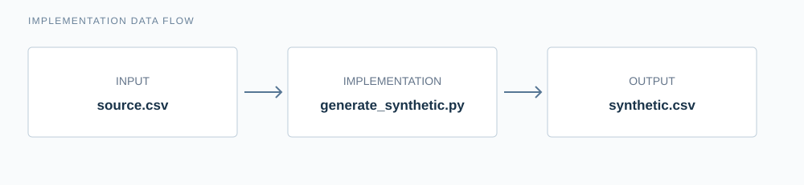
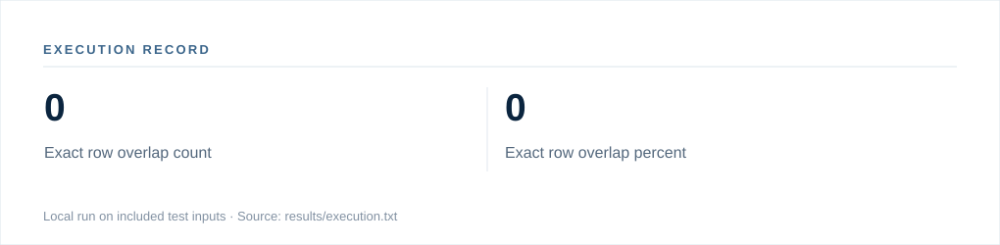

Project 006 / 100 · Foundations · Data Foundations & Engineering
Synthetic Data Generator
Creates a simple synthetic tabular dataset without copying rows verbatim. Numeric fields are sampled from clipped empirical distributions with noise; categorical fields are sampled from observed frequencies. The included comparison report measures distribution similarity and exact-row overlap.
Open-source research engineering portfolio · Source and replication instructions are included.
01 / Research problem
Research question
How well does simple tabular resampling preserve distributions without reproducing sensitive records?
Current capabilities
- Synthetic tabular data baseline
02 / System design
Implementation overview
A concise structural view of the code and inputs; not a production deployment diagram.

03 / Execution
Observed results
Local execution against bundled fixtures. Numbers are outputs of the software, not real-world effectiveness claims.

View execution transcript
$ python src/generate_synthetic.py sample/source.csv --rows 500 --output outputs/synthetic.csv
{
"numeric_ks": {
"age": {
"statistic": 0.10933333333333334,
"p_value": 0.9999873781200207
},
"income": {
"statistic": 0.12333333333333334,
"p_value": 0.999827924192468
}
},
"exact_row_overlap_count": 0,
"exact_row_overlap_percent": 0.0
}
04 / Reproduction
Run the implementation
Use Python 3.11+ with dependencies declared in the root repository.
python src/generate_synthetic.py sample/source.csv --rows 500 --output outputs/synthetic.csv
See the research brief for evaluation design and limitations.